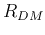
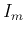
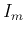

Also find the over all resistance  of the meter head assembly. This
information is necessary for understanding the AC voltage and resistance
measurement.
of the meter head assembly. This
information is necessary for understanding the AC voltage and resistance
measurement.
Find the values of R1 through R6 for the 6 scales of DC voltage measurement
so that these resistors will indeed allow a full display with
at the marked DC voltage for each of the 6 position. Note that
 is in series with
is in series with
 and the meter-head assembly with total
resistance
and the meter-head assembly with total
resistance
 .
.
Based on the given values of R14 through R17 for AC voltage measurement
(Figure 5 of the manual of the kit) find the total resistance 
of the meter-head assembly in series with the diode D1. Further, find
the resistance  and voltage drop of the diode D1 when the
meter-head has a full scale display.
and voltage drop of the diode D1 when the
meter-head has a full scale display.
Find the values of R14 through R17 so that they will indeed allow the meter-head to have a full scale display (with an average DC current of going through the meter-head), when the AC voltages of 10V, 50V, 250V and 1000V (RMS values) are applied to the corresponding scale positions.
The circuit shown in Figure 6 of the manual of the kit has some major mistake! Correct it.
Find the values of R12 and R11 so that the meter-head will have a full scale display (with an current of ), when the DC currents of 2.5 mA and 25 mA are applied to the corresponding scale positions.
Use the given values of R9=0.97  and R10=0.04
and R10=0.04  (not very
accurate!), find current  through the meter-head when the applied DC
current is 10 A. For this current to be exactly
(not very
accurate!), find current  through the meter-head when the applied DC
current is 10 A. For this current to be exactly  , what value
should R10 take?
, what value
should R10 take?
First note that different from all measurements of voltage and current, where the meterhead receives input through R7, for resistance measurement, the input comes through R23, i.e., the meterhead assembly inside the dashed box used previously is no longer helpful. Now you need to analyze the circuit inside the box.